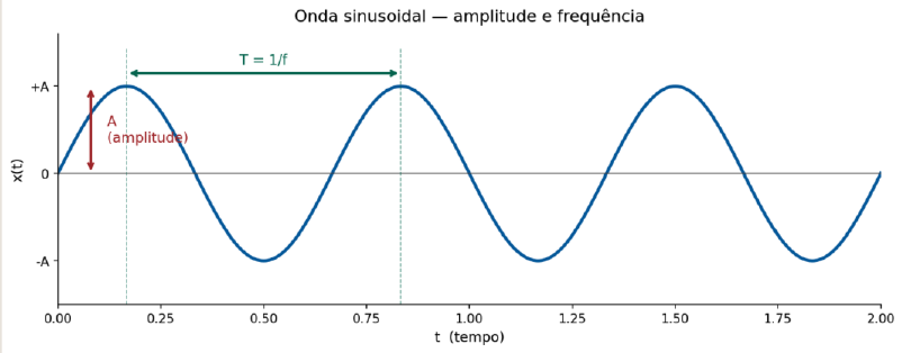
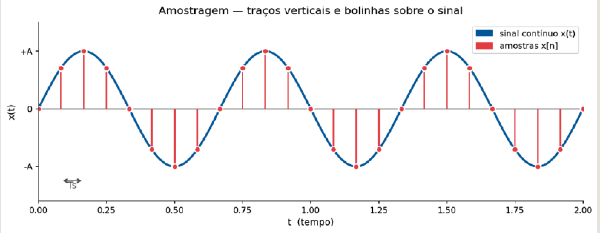
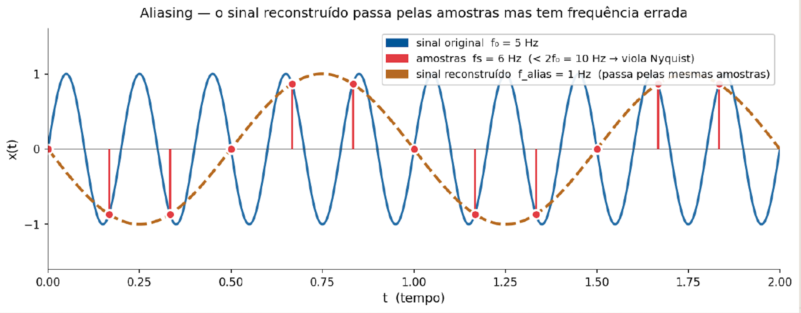
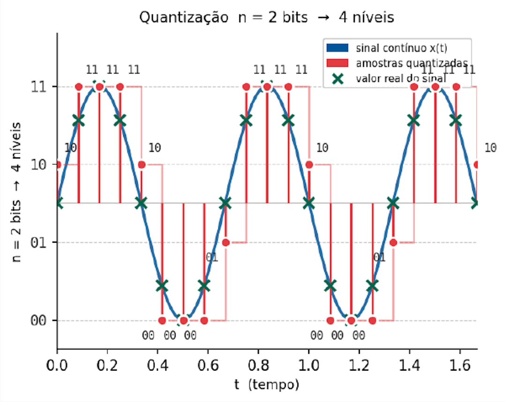
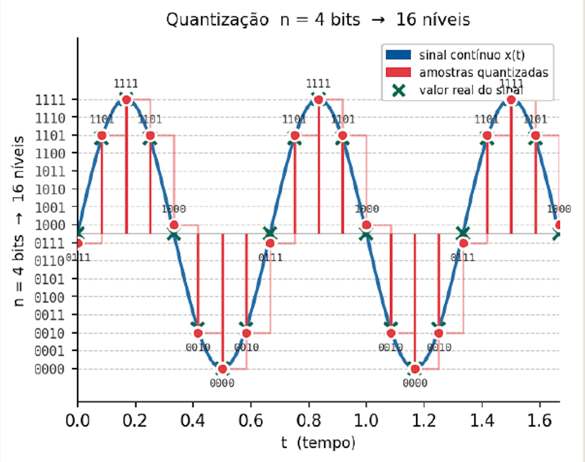
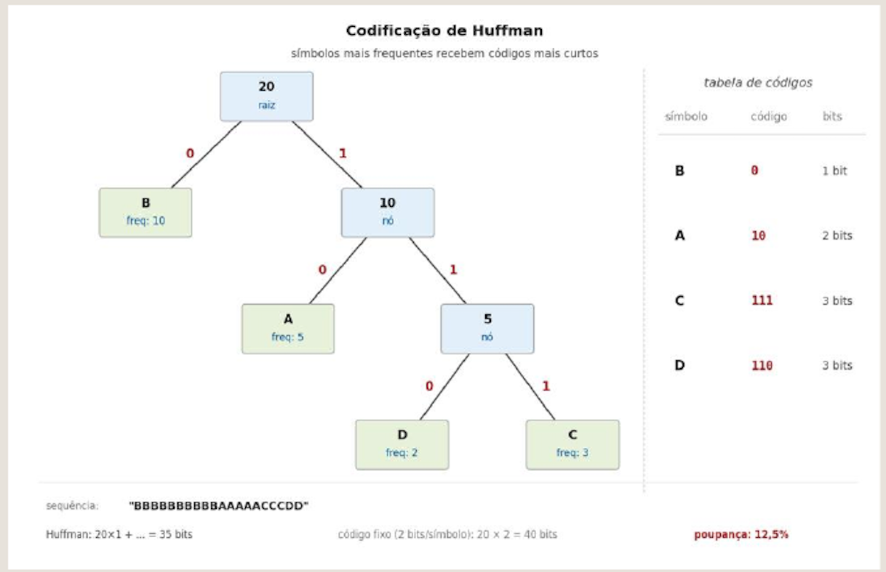
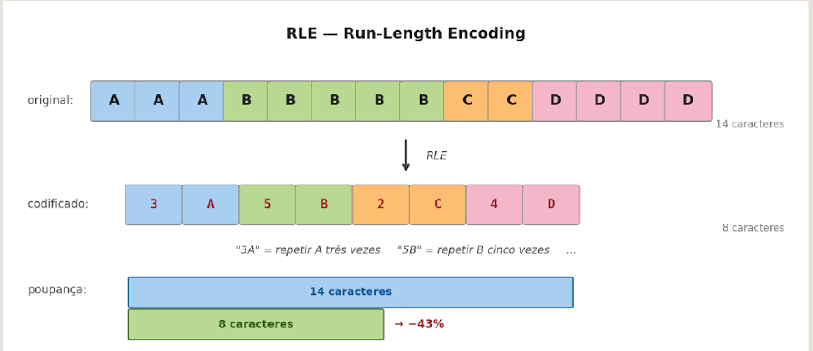
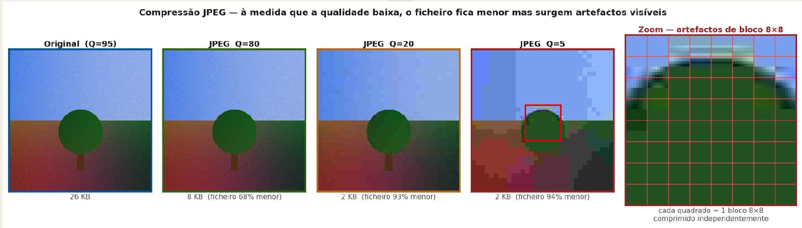

3 Digitalização e Compressão de Som e Imagem
Ferramentas e Aplicações Multimédia
3.1 Enquadramento
No capítulo anterior estabeleceu-se que toda a informação digital é representação numérica: texto, cor, imagem e áudio traduzem-se em sequências de bits organizados segundo convenções de codificação. Ficou, porém, por responder uma questão essencial: como é que os sinais do mundo real — contínuos, analógicos, ricos em detalhe — se convertem nessas sequências de números?
É precisamente esse processo — a digitalização — o objecto deste capítulo. Analisa-se também a consequência imediata da digitalização: os ficheiros resultantes são volumosos, e a sua transmissão e armazenamento exigem compressão. No final, apresentam-se os principais formatos de imagem e áudio utilizados na web, com critérios práticos de escolha.
3.2 Sinais no Mundo Real
3.2.1 Sinais contínuos e sinais discretos
A maior parte dos fenómenos naturais que interessam à multimédia — som, luz, temperatura, pressão — são sinais contínuos: variam em todos os instantes do tempo e podem assumir infinitos valores possíveis. Uma onda sonora, por exemplo, existe de forma ininterrupta na natureza, com amplitude que varia suavemente a cada fracção de segundo.
Os computadores, pelo contrário, trabalham com sinais discretos: representações compostas por valores separados, num número finito de níveis. Para armazenar, transmitir e processar um sinal natural num computador, é necessário convertê-lo de contínuo para discreto. Esse processo chama-se digitalização.
| Sinal contínuo | Sinal discreto | |
|---|---|---|
| Variação | Contínua em todos os instantes | Valores separados |
| Amplitude | Infinitos valores possíveis | Número finito de níveis |
| Exemplo | Onda sonora analógica | Áudio digital amostrado |
3.3 Digitalização
3.3.1 O processo de digitalização
Digitalizar significa converter um sinal contínuo num conjunto de valores numéricos que o representam com suficiente fidelidade. Este processo é o que permite armazenar música num ficheiro, gravar vídeo numa câmara ou transmitir voz por uma chamada digital.
A digitalização decompõe-se em três etapas sequenciais:
\[\text{Sinal contínuo} \xrightarrow{\text{Amostragem}} \xrightarrow{\text{Quantização}} \xrightarrow{\text{Codificação}} \text{Sequência de bits}\]
Cada etapa introduz uma aproximação ao sinal original — a qualidade final depende das escolhas feitas em cada uma delas.
3.4 Amostragem
3.4.1 O que é a amostragem
A amostragem consiste em medir o valor do sinal em intervalos regulares de tempo. Em vez de registar o sinal de forma contínua — o que seria impossível num sistema digital — recolhe-se uma amostra a cada intervalo fixo. Quanto mais amostras por segundo, mais fielmente o sinal original é representado.


3.4.2 Frequência de amostragem
O número de amostras recolhidas por segundo designa-se frequência de amostragem e mede-se em hertz (Hz) — ou, mais correctamente, em amostras por segundo. A relação é directa: frequência mais alta significa maior fidelidade ao sinal original, mas também maior volume de dados.
| Contexto | Frequência | Amostras/s |
|---|---|---|
| Telefone | 8 kHz | 8 000 |
| Áudio CD | 44,1 kHz | 44 100 |
| Áudio HD | 96–192 kHz | 96 000–192 000 |
O padrão de 44,1 kHz do CD foi estabelecido com base no teorema de Nyquist, como se explica na secção seguinte.
3.4.3 Teorema de Nyquist
O teorema de Nyquist-Shannon é o fundamento teórico da amostragem digital. Enuncia-se da seguinte forma:
Para representar correctamente um sinal, a frequência de amostragem deve ser pelo menos o dobro da frequência máxima presente no sinal.
\[f_a \geq 2 \times f_{\text{máx}}\]
A título de exemplo: a voz humana contém frequências até aproximadamente 4 kHz; para a digitalizar correctamente, é necessário amostrar a pelo menos 8 kHz — daí o padrão telefónico. O ouvido humano percebe frequências até cerca de 20 kHz; o padrão CD de 44,1 kHz cobre esse intervalo com margem de segurança.
Quando a frequência de amostragem é inferior ao limiar de Nyquist, ocorre aliasing: o sinal reconstruído tem uma frequência errada — diferentes das do sinal original — porque as amostras são insuficientes para distinguir os ciclos do sinal.

O aliasing é uma distorção irreversível — uma vez que o sinal foi amostrado abaixo do limiar de Nyquist, a informação perdida não pode ser recuperada.
3.5 Quantização
3.5.1 O que é a quantização
Após a amostragem, cada valor medido é um número real — pode assumir qualquer valor dentro de um intervalo contínuo. O sistema digital, porém, só consegue armazenar valores inteiros num conjunto finito de níveis. A quantização é o processo de mapear cada valor amostrado para o nível discreto mais próximo dentro dessa escala finita.
Intuitivamente: imagine uma régua com marcações apenas nos centímetros inteiros. Qualquer medida (13,7 cm, 8,3 cm) tem de ser arredondada para o valor marcado mais próximo (14 cm, 8 cm). Quanto mais marcações a régua tiver, menor o erro de arredondamento.
O número de níveis disponíveis é determinado pela profundidade de bits: com \(n\) bits obtêm-se \(2^n\) níveis distintos.


3.5.2 Profundidade de bits
| Profundidade | Níveis | Aplicação típica |
|---|---|---|
| 8 bits | 256 | Telefone, rádio AM |
| 16 bits | 65 536 | Padrão CD — qualidade elevada |
| 24 bits | 16 777 216 | Estúdio profissional |
O padrão CD combina amostragem a 44,1 kHz com profundidade de 16 bits — uma escolha que cobre a gama perceptível pelo ouvido humano com qualidade suficiente para a grande maioria dos contextos.
3.6 Compressão
3.6.1 A necessidade de compressão
Os ficheiros multimédia não comprimidos ocupam volumes de dados consideráveis. Para dimensionar o problema, calculam-se dois exemplos representativos:
Imagem 1920×1080 px a 24 bits:
| Passo | Operação | Resultado |
|---|---|---|
| Píxeis totais | 1920 × 1080 | 2 073 600 px |
| Bits totais | 2 073 600 × 24 | 49 766 400 bits |
| Bytes | 49 766 400 ÷ 8 | 6 220 800 bytes |
| Megabytes | 6 220 800 ÷ 1 048 576 | ≈ 5,93 MB |
Áudio WAV estéreo — 44,1 kHz / 16 bits / 1 minuto:
| Passo | Operação | Resultado |
|---|---|---|
| Amostras por canal | 44 100 × 60 s | 2 646 000 |
| Amostras totais | 2 646 000 × 2 canais | 5 292 000 |
| Bits totais | 5 292 000 × 16 | 84 672 000 bits |
| Megabytes | 84 672 000 ÷ 8 ÷ 1 048 576 | ≈ 10,09 MB |
Um filme de duas horas em qualidade HD não comprimida ocuparia na ordem dos 200 GB — inviável para transmissão ou armazenamento doméstico. Daí a necessidade de compressão.
3.6.2 Compressão sem perdas
A compressão sem perdas (lossless compression) elimina apenas a redundância presente nos dados — padrões repetidos, sequências previsíveis, informação que pode ser reconstruída matematicamente. Os dados originais são recuperáveis na íntegra após descompressão.
Dois algoritmos clássicos ilustram os princípios fundamentais:
Codificação de Huffman — atribui códigos binários mais curtos aos símbolos mais frequentes e códigos mais longos aos mais raros. Para a sequência BBBBBBBBBBAAAACCCDD, o símbolo B (frequência 10) recebe o código 0 (1 bit), enquanto D (frequência 2) recebe 110 (3 bits) — poupança de 12,5% face ao código fixo.

RLE (Run-Length Encoding) — substitui sequências de símbolos repetidos pelo par (contagem, símbolo). A sequência de 14 caracteres AAABBBBBCCDDDDD é codificada como 3A5B2C4D — 8 caracteres, poupança de 43%.

Outros algoritmos sem perdas amplamente utilizados incluem LZ77, LZ78 e DEFLATE (este último é a base dos formatos ZIP e PNG).
Quando usar compressão sem perdas: documentos de texto, gráficos com áreas de cor uniforme, imagens com texto, logótipos, e qualquer situação em que a qualidade máxima é obrigatória.
3.6.3 Compressão com perdas
A compressão com perdas (lossy compression) vai mais longe: remove informação que os modelos da percepção humana consideram pouco perceptível. O resultado é um ficheiro substancialmente mais pequeno, mas a qualidade original não é recuperável.
Os algoritmos de compressão com perdas exploram limitações do sistema perceptivo humano — o olho é menos sensível a variações de alta frequência em regiões de baixo contraste, o ouvido é menos sensível a sons fracos mascarados por sons fortes, etc. Formatos como JPEG (imagem), MP3 e AAC (áudio) e H.264 (vídeo) baseiam-se neste princípio.

Limitações da compressão com perdas:
- A qualidade original não é recuperável após compressão
- Artefactos tornam-se visíveis a taxas de compressão muito elevadas
- Compressões repetidas degradam progressivamente a qualidade (generation loss)
3.6.4 O compromisso qualidade vs. tamanho
Não existe uma escolha universalmente correcta entre qualidade e tamanho — depende do contexto de uso:
| Contexto | Prioridade | Escolha típica |
|---|---|---|
| Arquivo | Qualidade máxima | Sem perdas (PNG, WAV) |
| Web | Equilíbrio | JPEG médio, WebP |
| Streaming | Tamanho mínimo | Compressão elevada |
| Edição | Sem degradação | Sem perdas ou RAW |
3.7 Formatos de Imagem
A escolha do formato de imagem afecta directamente a qualidade visual, o tamanho do ficheiro e a compatibilidade com browsers e ferramentas. Apresentam-se os quatro formatos fundamentais para a web.
3.7.1 JPEG
O JPEG (Joint Photographic Experts Group) é o formato dominante para fotografia digital. Utiliza compressão com perdas baseada na transformada de cosseno discreta (DCT), que opera em blocos de 8×8 píxeis.
- Compressão com perdas, controlada por um parâmetro de qualidade
- Excelente para fotografias e imagens com gradientes suaves
- Suporte universal em todos os browsers
- Não suporta transparência (canal alfa)
- Não adequado para imagens com texto ou bordas nítidas
Usar quando: fotografias, imagens realistas, imagens com gradientes, quando o tamanho do ficheiro é prioritário.
3.7.2 PNG
O PNG (Portable Network Graphics) foi criado como alternativa sem perdas ao GIF. Utiliza o algoritmo DEFLATE para compressão.
- Compressão sem perdas — qualidade original preservada
- Suporta transparência total (canal alfa de 8 bits)
- Ideal para gráficos, interface de utilizador e imagens com texto
- Ficheiros tipicamente maiores que JPEG para fotografias
Usar quando: logótipos, ícones, capturas de ecrã, imagens com texto, elementos de interface, quando a transparência é necessária.
3.7.3 SVG
O SVG (Scalable Vector Graphics) é fundamentalmente diferente dos formatos anteriores: não armazena píxeis, mas sim descrições matemáticas de formas, curvas e texto em formato XML.
- Formato vectorial — escala sem qualquer perda de qualidade
- Editável directamente com código ou editor de texto
- Tamanho muito reduzido para gráficos simples
- Suporta animações via CSS e JavaScript
- Não adequado para fotografias
Usar quando: ícones, logótipos, ilustrações para ecrã, diagramas, animações, quando há múltiplas resoluções de ecrã.
3.7.4 WebP
O WebP foi desenvolvido pela Google em 2010 como formato moderno para a web, suportando tanto compressão com perdas como sem perdas.
- Com ou sem perdas, conforme a configuração
- 20–34% mais pequeno que JPEG na mesma qualidade perceptível
- Suporta transparência (como PNG) e animação (como GIF)
- Suporte nos browsers modernos (Chrome, Firefox, Safari, Edge)
Usar quando: web moderna, aplicações web progressivas (PWA), quando o desempenho de carregamento é crítico.
3.8 Som Digital
3.8.1 Representação do som digital
O som digital é uma sequência de amostras numéricas que representam a amplitude de uma onda sonora ao longo do tempo. Cada amostra é um valor inteiro que indica a pressão sonora naquele instante.
O tamanho de um ficheiro áudio não comprimido calcula-se por:
\[\text{Tamanho} = f_a \times n_{\text{bits}} \times n_{\text{canais}} \times t_{\text{segundos}}\]
onde \(f_a\) é a frequência de amostragem, \(n_{\text{bits}}\) a profundidade de bits, \(n_{\text{canais}}\) o número de canais (1 para mono, 2 para estéreo) e \(t\) a duração em segundos.
3.8.2 Formatos áudio
WAV — formato sem compressão (PCM puro). Preserva a qualidade máxima e é o padrão para edição profissional. Ficheiros grandes.
MP3 — compressão com perdas baseada em modelos psicoacústicos. Muito compacto e amplamente suportado. Perde frequências altas a taxas de compressão elevadas. Formato dominante durante décadas.
AAC (Advanced Audio Coding) — compressão com perdas de geração posterior ao MP3. Melhor qualidade à mesma taxa de transferência. Padrão adoptado pela Apple e pelo YouTube.
| Formato | Compressão | Qualidade | Tamanho | Uso típico |
|---|---|---|---|---|
| WAV | Nenhuma | Máxima | Grande | Edição, arquivo |
| MP3 | Com perdas | Boa | Pequeno | Distribuição |
| AAC | Com perdas | Muito boa | Pequeno | Streaming, móvel |
3.9 Síntese
- A digitalização converte sinais analógicos contínuos em sequências numéricas através de três etapas: amostragem, quantização e codificação.
- O teorema de Nyquist estabelece que a frequência de amostragem deve ser pelo menos o dobro da frequência máxima do sinal — abaixo deste limiar ocorre aliasing irreversível.
- A profundidade de bits determina o número de níveis de quantização: com \(n\) bits obtêm-se \(2^n\) níveis distintos.
- A compressão sem perdas elimina redundância preservando os dados originais na íntegra; a compressão com perdas remove informação pouco perceptível para obter ficheiros substancialmente mais pequenos.
- A escolha do formato correcto — JPEG, PNG, SVG, WebP, WAV, MP3, AAC — afecta qualidade, tamanho e desempenho, e depende do contexto de utilização.
3.10 Exercícios
3.10.1 Digitalização e amostragem
Determine a frequência de amostragem mínima para cada caso:
- Sinal de áudio com frequência máxima de 8 kHz
- Sinal de vídeo com frequência máxima de 6 MHz
- Sinal de voz humana com frequência máxima de 4 kHz
Verificação: 16 kHz, 12 MHz e 8 kHz.
Calcule o tamanho em megabytes de um ficheiro WAV estéreo com as seguintes características:
- 44,1 kHz / 16 bits / 3 minutos
- 96 kHz / 24 bits / 1 minuto
Verificação: ≈ 30,3 MB e ≈ 34,3 MB.
3.10.2 Compressão e formatos
Para cada situação, indique o formato de imagem mais adequado e justifique a escolha:
- Fotografia de produto para uma loja online
- Logótipo de empresa para o cabeçalho de um site
- Ícone de interface que deve funcionar em ecrãs de alta densidade
- Captura de ecrã de documentação técnica com texto
Aplique o algoritmo RLE à seguinte sequência de 20 caracteres:
AAAAABBBBBBBCCDDDDDD
- Qual é a representação RLE resultante?
- Quantos caracteres ocupa a representação original?
- Quantos caracteres ocupa a representação RLE?
- Qual a taxa de compressão obtida?
Verificação: 5A7B2C6D — 8 caracteres; taxa de compressão de 60%.